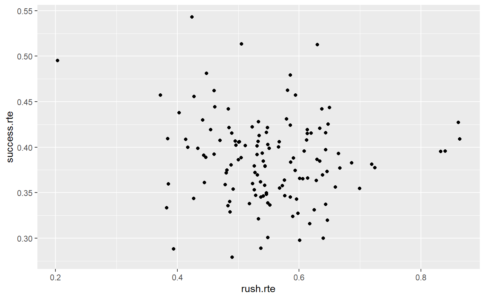
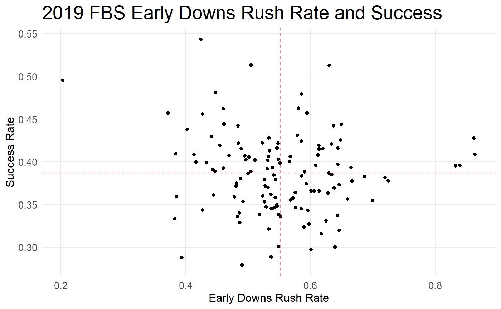
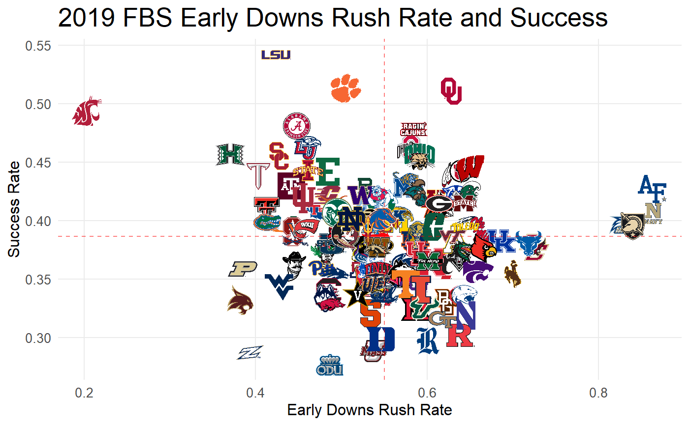

Introduction to College Football Analytics with cfbscrapR
Parker Fleming | @statsowar
intro.RmdHello, friends.
You, like me, might be a big college football fan who is interested in statistics and analytics, wanting to get into the game for yourself. This simple tutorial is just the way to do that!
The cfbscrapR package is just the way to get started with analytics. cfbscrapR is a wrapper for the CollegeFootballData.com API, which lets you pull data directly from the site into the statistical software R for analysis. What kind of data can you get with cfbscrapR?
- Play-by-play data for every FBS game
- Drive-level results for every FBS game
- Game level stats, betting lines, home and away teams
- Historical polls and SP+ Rankings
- Recruiting Rankings
- Coaching Data …and more!
We’ll learn how to do three things in this document:
- Pull and clean play-level and game-level data for current and past seasons.
- Calculate yards per play, success rate, and rushing and passing EPA.
- Learn some basics of visualizing those stats.
I hope you enjoy! Know that there is a learning curve to all this! It’s difficult, and at times can be frustrating. The best way to learn this stuff is to play around with it, understand the syntax, and beat your head against the wall for a little bit until it works.
-Parker Fleming | [@statsowar](twitter.com/statsowar)
Setting up R and R Studio
First things first, you need to install R and download R Studio. I’ll direct you to this link LINK HERE. Go do that now, then come back.
Now that we have R and R Studio all put together, it’s time to get organized. That’s often the first step of any project working with data, and the more organized you can be, the easier of a time you’ll have trying to wrangle and analyze the data.
Notice there are four quadrants to your R Studio setup: the top right is the Evironment tab, which shows you the data, values, and functions you currently have loaded. The bottom right is where you’ll see your charts and graphs in the viewer or plots tab. The bottom left is the console, where output goes. When you execute code, the terminal responds and shows you some stuff down there. The top left is the place you’ll live; it’s where you can edit scripts. We’ll load a new project and then get started.
In the top right of your R Studio window, there will be a small dropdown menu that says “None”. Click it, and select “New Project.” Title your new folder something like “CFB Analysis”.
This takes care of setting your working directory, so everything you create and output will be saved in that folder.
What should pop up then is a completely fresh R project. Click the white square with a green plus sign in the top left of the window and select “New R Script”. A script is the place you will write your commands before you execute them. You can work in the console, which is just below the scripts and where output is displayed, but I find it easier to stick to scripts - that way, you can save what you’ve done and replicate it easily, like I do with the EPA rankings, for example.
Throughout this document, I’ll have lines of code interspersed with commentary. What I’d advise is that you read the commentary, then copy the code into your script and then run the code from there. Then, at the end, you’ll have a complete script that will guide you through CFB Data analysis.
Getting the Data
What we’ll do here is a template for an initial data ingest. This will let you pull the play-by-play data, combine it with the game-level data, and then filter out FCS games and garbage time, should you so choose.
Install the necessary packages.
To use the packages, we need to do two things. First, one time only on your machine, you need to install the pacakges. Then, every time you open up R Studio, you will need to load the packages.
To install the packages, simply run each line of code below once (without the ‘#’ at the beginning):
#install.packages('tidyverse')
#installpackages('easypackages')
#install.packages("devtools")
#devtools::install_github("meysubb/cfbscrapR")
#install.packages('ggimage')
#install.packages('gt')Don’t worry about what all that means for now. Now, after running those lines of code, you have all the pacakges you need to get started with college football analytics. Let’s load the pacakges and download the play-by-play data for 2019. First we load the three necessary packages, then we’re going to run a loop over the number of weeks in the season and use the cfb_pbp_data() function, which pulls the play-by-play.
We’re going to pull the data, clean it, then select some relevant variables, and then we’ll go forward with moving the data.
Pull the data from the API
Note in the code how we defined what pbp_2019 is: we used the little arrow. If you’re on mac, you can press option and the dash key to pull one of those little guys up. That’s just R’s fun way of saying “name that thing this”.
easypackages::libraries('tidyverse', 'cfbscrapR', 'ggimage', 'gt')
pbp_2019 <- cfb_pbp_data(year=2019, season_type = "regular", week=NULL, epa_wpa = TRUE)
This code will take a few minutes (~3:10) to run - it’s pulling a lot of data from the API at once. Give your R console a break until it finishes! You’ll know it’s done running when you can see “pbp_2019” in the “Environment” window in the top right of your R console (and when the little carot > pops up in your terminal, at the bottom left).
Now, we have the entire season’s worth of play-by-play data stored in an object called “pbp_2019”. All of that text in the cfb_pbp_data() is customizable: you could select only a specific week, you could pull data from bowl games by changing season_type to “both”. Finally, the epa_wpa = TRUE adds cfbscrapR’s EPA model and a bunch of useful stats and codes on the data!
Let’s pull the game data, using the cfb_game_info() function, and merge the two. Then, we’ll make use of the filter and mutate functions from the tidyverse.
#Game level data games_19 <- cfb_game_info(2019) #Join Games and Play-by-Play plays19 <- left_join(pbp_2019, games_19, by = c("game_id" = "id"))
Above, we pulled 2019 game data from the API into an object called “games_19”, and then we used left_join to merge each play to the information of the game it happened in, an object called “plays19”. We matched the plays to the games by telling R that the column “game_id” in pbp_2019 was the same as the column “id” in the games_19 object.
Clean the Data
Before we break down what we did to create the pbp object, we need to discuss two things:
Filtering on conditions: We will use the double equality (==) to identify conditions we need to meet for our filter function. We can also use !=, “not equals”, to select values on that condition (i.e. offense_play != “TCU” would remove TCU from the data), and we can use the standard greater than > and less than <. You might have to stop and think a bit before you write your filter function, so just make sure you know what it is you are actually selecting.
the pipe: %>% is the magrittr pipe. The pipe is extremely handy. Instead of us having to type a function and select the data we want to apply that function to over and over again, the pipe tells R what to do in the structure of : “get this thing and then do this to it.”
I’m naming our dataset of play by play data filtered “pbp”. I don’t like to overwrite my data once I’ve imported it, so I’m going to give it a new name. That way, if I mess something up along the way, I can go back to the start and clean up without too much hassle.
We’ll use the indicator variables “rush” and “pass” to select every play categorized as rushes or passes. (Yes, this leaves out special teams and yes this leaves out penalties. We’re starting small, and can always go back later.)
Also note we use the | symbol to denote “or” in our filter function. We’ll filter the data for any observations that are runs (rush == 1) or passes (pass == 1), and store it in a new object called plays.
But we won’t stop there! The beauty of the pipe is that we can do multiple operations, all strung together. So, in the code below, we’ll create a new object called “pbp”. To create this object, we’ll do three things:
- Take plays19, remove all plays that aren’t rushes or passes:
filter(rush == 1 | pass == 1)AND THEN
- Remove all FCS teams. This is a personal preference of mine, and if you’d like to leave those in the data, you can certainly remove this line! It’s a good way to illustrate how you’d do this, though. By using filter(), I tell R to select all observations that are not (!) missing the variable home_conference or away_conference. As all FBS teams have a conference in the data, this will remove all FCS teams. Note: is.na(x) means “is missing variable x”, so !is.na(x) means “is not missing variable x.”
- Create new variables!
mutate()is R’s weird way of saying “make a new variable!” So, we’ll create three new variables:
-
abs_diffis the absolute value of the score difference, created using the abs() function. This variable helps us define the garbage time filter.
-
garbageis an indicator variable for whether a play is in garbage time, as defined by our friend Bill Connelly. Garbage time is when the score difference is greater than 43 in the first quarter, 37 in the second quarter, 27 in the third quarter, and 22 in the fourth quarter. To create this variable, we use theifelse(), which takes three arguments: a condition, yes, and no. ifelse basically says “if this condition is met, then make this variable this value, or do something else.” We’ve strung multiple ifelse() conditions together to cover all of our bases.
-
success: We use the sameifelse()logic to create a binary variable that indicates whether a play was successful or not, again, as defined by Bill C.
#Create Garbage time filter, eliminate FCS games, #filter for only rushes and passes, create success variable pbp <- plays19 %>% filter(rush == 1| pass == 1) %>% filter(!is.na(home_conference) & !is.na(away_conference)) %>% mutate(abs_diff = abs(score_diff), garbage = ifelse(period == 1 & abs_diff > 43, 1, ifelse(period == 2 & abs_diff > 37, 1, ifelse(period == 3 & abs_diff > 27, 1, ifelse(period == 4 & abs_diff > 22, 1, 0)))), success = ifelse(down == 1 & yards_gained > .5*distance, 1, ifelse(down == 2 & yards_gained > .7*distance, 1, ifelse((down == 3 | down == 4) & yards_gained >=distance, 1, 0))))
Now we have a clean dataset of every rush and pass that happened in 2019. (Quick note: unfortunately, due to the way the pbp data is generated on ESPN, QB scrambles from dropbacks are coded as rushes. It’s not ideal, but it’s not a dealbreaker; just something to remember as you do your analysis).
Let’s look at it!
glimpse(pbp)
## Rows: 100,831
## Columns: 138
## $ id_play <chr> "401110720101855301", "40111072010185840...
## $ offense_play <chr> "Alabama", "Alabama", "Alabama", "Duke",...
## $ defense_play <chr> "Duke", "Duke", "Duke", "Alabama", "Alab...
## $ half <fct> 1, 1, 1, 1, 1, 1, 1, 1, 1, 1, 1, 1, 1, 1...
## $ period <int> 1, 1, 1, 1, 1, 1, 1, 1, 1, 1, 1, 1, 1, 1...
## $ clock.minutes <dbl> 29, 29, 28, 27, 27, 26, 26, 26, 26, 25, ...
## $ clock.seconds <int> 46, 15, 30, 50, 27, 55, 42, 24, 11, 46, ...
## $ play_type <chr> "Rush", "Pass Reception", "Sack", "Rush"...
## $ play_text <chr> "Jerome Ford run for 1 yd to the Alab 23...
## $ down <dbl> 1, 2, 3, 1, 2, 3, 1, 2, 1, 2, 3, 1, 2, 3...
## $ distance <int> 10, 9, 7, 10, 11, 7, 10, 4, 10, 5, 5, 10...
## $ yards_to_goal <dbl> 78, 77, 75, 55, 56, 52, 83, 77, 26, 21, ...
## $ yards_gained <int> 1, 2, -6, -1, 4, 0, 6, 3, 5, 0, 5, 2, 0,...
## $ TimeSecsRem <dbl> 1786, 1755, 1710, 1670, 1647, 1615, 1602...
## $ offense_score <int> 0, 0, 0, 0, 0, 0, 0, 0, 0, 0, 0, 0, 0, 0...
## $ defense_score <int> 0, 0, 0, 0, 0, 0, 0, 0, 0, 0, 0, 0, 0, 0...
## $ EPA <dbl> -0.75653413, -0.80455228, -1.87692365, -...
## $ def_EPA <dbl> 0.75653413, 0.80455228, 1.87692365, 0.99...
## $ ep_before <dbl> 0.383715944, -0.372818190, -1.177370469,...
## $ ep_after <dbl> -0.3728182, -1.1773705, -3.0542941, 1.51...
## $ ppa <chr> "-0.51421952939679995", "-0.227264862029...
## $ wpa <dbl> -0.0291348, -0.0296455, -0.0775837, -0.0...
## $ wp_before <dbl> 0.4863020, 0.4571672, 0.4275217, 0.59402...
## $ wp_after <dbl> 0.4571672, 0.4275217, 0.3499380, 0.55370...
## $ game_play_number <dbl> 2, 3, 4, 6, 7, 8, 10, 11, 12, 13, 14, 15...
## $ drive_number <int> 1, 1, 1, 2, 2, 2, 3, 3, 4, 4, 4, 4, 4, 4...
## $ drive_play_number <dbl> 2, 3, 4, 1, 2, 3, 1, 2, 1, 2, 3, 4, 5, 6...
## $ firstD_by_poss <dbl> 1, 0, 0, 1, 0, 0, 1, 0, 1, 0, 0, 0, 0, 0...
## $ firstD_by_penalty <dbl> 0, 0, 0, 0, 0, 0, 0, 0, 0, 0, 0, 0, 0, 0...
## $ firstD_by_yards <dbl> 0, 0, 0, 0, 0, 0, 0, 0, 0, 0, 0, 1, 0, 0...
## $ score_diff <int> 0, 0, 0, 0, 0, 0, 0, 0, 0, 0, 0, 0, 0, 0...
## $ Goal_To_Go <lgl> FALSE, FALSE, FALSE, FALSE, FALSE, FALSE...
## $ Under_two <lgl> FALSE, FALSE, FALSE, FALSE, FALSE, FALSE...
## $ offense_timeouts <int> 3, 3, 3, 3, 3, 3, 3, 3, 3, 3, 3, 3, 3, 3...
## $ defense_timeouts <int> 3, 3, 3, 3, 3, 3, 3, 3, 3, 3, 3, 3, 3, 3...
## $ change_of_poss <dbl> 0, 0, 0, 0, 0, 0, 0, 1, 0, 0, 0, 0, 0, 0...
## $ drive_start_yards_to_goal <int> 78, 78, 78, 55, 55, 55, 83, 83, 26, 26, ...
## $ drive_end_yards_to_goal <int> 81, 81, 81, 52, 52, 52, 77, 77, 7, 7, 7,...
## $ drive_yards <int> -3, -3, -3, 3, 3, 3, 9, 9, 19, 19, 19, 1...
## $ drive_scoring <lgl> FALSE, FALSE, FALSE, FALSE, FALSE, FALSE...
## $ drive_result <chr> "PUNT", "PUNT", "PUNT", "PUNT", "PUNT", ...
## $ drive_pts <dbl> 0, 0, 0, 0, 0, 0, 0, 0, 0, 0, 0, 0, 0, 0...
## $ home <chr> "Alabama", "Alabama", "Alabama", "Alabam...
## $ away <chr> "Duke", "Duke", "Duke", "Duke", "Duke", ...
## $ game_id <int> 401110720, 401110720, 401110720, 4011107...
## $ new_id <dbl> 101855301, 101858401, 101866901, 1018749...
## $ drive_id <dbl> 4011107201, 4011107201, 4011107201, 4011...
## $ score_diff_start <dbl> 0, 0, 0, 0, 0, 0, 0, 0, 0, 0, 0, 0, 0, 0...
## $ down_end <fct> 2, 3, 4, 2, 3, 4, 2, 1, 2, 3, 1, 2, 3, 4...
## $ distance_end <dbl> 9, 7, 13, 11, 7, 7, 4, 10, 5, 5, 10, 8, ...
## $ yards_to_goal_end <dbl> 77, 75, 81, 56, 52, 52, 77, 26, 21, 21, ...
## $ TimeSecsRem_end <dbl> 1755, 1710, 1677, 1647, 1615, 1609, 1584...
## $ offense_conference <chr> "SEC", "SEC", "SEC", "ACC", "ACC", "ACC"...
## $ defense_conference <chr> "ACC", "ACC", "ACC", "SEC", "SEC", "SEC"...
## $ yard_line <int> 22, 23, 25, 55, 56, 52, 17, 23, 26, 21, ...
## $ scoring <lgl> FALSE, FALSE, FALSE, FALSE, FALSE, FALSE...
## $ drive_start_yardline <int> 22, 22, 22, 55, 55, 55, 17, 17, 26, 26, ...
## $ drive_time_minutes_start <int> 15, 15, 15, 12, 12, 12, 11, 11, 11, 11, ...
## $ drive_time_seconds_start <int> 0, 0, 0, 57, 57, 57, 49, 49, 24, 24, 24,...
## $ drive_time_minutes_end <int> 12, 12, 12, 11, 11, 11, 11, 11, 8, 8, 8,...
## $ drive_time_seconds_end <int> 57, 57, 57, 49, 49, 49, 24, 24, 28, 28, ...
## $ drive_time_minutes_elapsed <dbl> 2, 2, 2, 1, 1, 1, 0, 0, 2, 2, 2, 2, 2, 2...
## $ drive_time_seconds_elapsed <dbl> 3, 3, 3, 8, 8, 8, 25, 25, 56, 56, 56, 56...
## $ scoring_play <dbl> 0, 0, 0, 0, 0, 0, 0, 0, 0, 0, 0, 0, 0, 0...
## $ pts_scored <dbl> 0, 0, 0, 0, 0, 0, 0, 0, 0, 0, 0, 0, 0, 0...
## $ touchdown <dbl> 0, 0, 0, 0, 0, 0, 0, 0, 0, 0, 0, 0, 0, 0...
## $ off_td_play <dbl> 0, 0, 0, 0, 0, 0, 0, 0, 0, 0, 0, 0, 0, 0...
## $ def_td_play <dbl> 0, 0, 0, 0, 0, 0, 0, 0, 0, 0, 0, 0, 0, 0...
## $ kickoff_play <dbl> 0, 0, 0, 0, 0, 0, 0, 0, 0, 0, 0, 0, 0, 0...
## $ kickoff_tb <dbl> 0, 0, 0, 0, 0, 0, 0, 0, 0, 0, 0, 0, 0, 0...
## $ kick_play <dbl> 0, 0, 0, 0, 0, 0, 0, 0, 0, 0, 0, 0, 0, 0...
## $ punt_play <dbl> 0, 0, 0, 0, 0, 0, 0, 0, 0, 0, 0, 0, 0, 0...
## $ punt <dbl> 0, 0, 0, 0, 0, 0, 0, 0, 0, 0, 0, 0, 0, 0...
## $ punt_tb <dbl> 0, 0, 0, 0, 0, 0, 0, 0, 0, 0, 0, 0, 0, 0...
## $ fumble_vec <dbl> 0, 0, 0, 0, 0, 0, 0, 1, 0, 0, 0, 0, 0, 0...
## $ rush <dbl> 1, 0, 0, 1, 1, 0, 1, 1, 1, 1, 1, 1, 0, 1...
## $ pass <dbl> 0, 1, 1, 0, 0, 1, 0, 0, 0, 0, 0, 0, 1, 0...
## $ sack_vec <dbl> 0, 0, 1, 0, 0, 0, 0, 0, 0, 0, 0, 0, 0, 0...
## $ turnover_vec <dbl> 0, 0, 0, 0, 0, 0, 0, 1, 0, 0, 0, 0, 0, 0...
## $ penalty_flag <lgl> FALSE, FALSE, FALSE, FALSE, FALSE, FALSE...
## $ penalty_declined <lgl> FALSE, FALSE, FALSE, FALSE, FALSE, FALSE...
## $ penalty_no_play <lgl> FALSE, FALSE, FALSE, FALSE, FALSE, FALSE...
## $ penalty_offset <lgl> FALSE, FALSE, FALSE, FALSE, FALSE, FALSE...
## $ penalty_1st_conv <lgl> FALSE, FALSE, FALSE, FALSE, FALSE, FALSE...
## $ penalty_text <lgl> FALSE, FALSE, FALSE, FALSE, FALSE, FALSE...
## $ end_of_half <dbl> 0, 0, 0, 0, 0, 0, 0, 0, 0, 0, 0, 0, 0, 0...
## $ turnover <dbl> 0, 0, 0, 0, 0, 0, 0, 1, 0, 0, 0, 0, 0, 0...
## $ downs_turnover <dbl> 0, 0, 0, 0, 0, 0, 0, 0, 0, 0, 0, 0, 0, 0...
## $ half_play_number <dbl> 2, 3, 4, 6, 7, 8, 10, 11, 12, 13, 14, 15...
## $ off_timeouts_rem_before <dbl> 3, 3, 3, 3, 3, 3, 3, 3, 3, 3, 3, 3, 3, 3...
## $ def_timeouts_rem_before <dbl> 3, 3, 3, 3, 3, 3, 3, 3, 3, 3, 3, 3, 3, 3...
## $ missing_yard_flag <lgl> FALSE, FALSE, FALSE, FALSE, FALSE, FALSE...
## $ first_by_penalty <dbl> 0, 0, 0, 0, 0, 0, 0, 0, 0, 0, 0, 0, 0, 0...
## $ first_by_yards <dbl> 0, 0, 0, 0, 0, 0, 0, 0, 0, 0, 1, 0, 0, 0...
## $ adj_TimeSecsRem <dbl> 3586, 3555, 3510, 3470, 3447, 3415, 3402...
## $ play_after_turnover <dbl> 0, 0, 0, 0, 0, 0, 0, 0, 1, 0, 0, 0, 0, 0...
## $ scored_pts <dbl> 0, 0, 0, 0, 0, 0, 0, 0, 0, 0, 0, 0, 0, 0...
## $ home_EPA <dbl> -0.75653413, -0.80455228, -1.87692365, 0...
## $ away_EPA <dbl> 0.75653413, 0.80455228, 1.87692365, -0.9...
## $ ExpScoreDiff <dbl> 0.383715944, -0.372818190, -1.177370469,...
## $ ExpScoreDiff_Time_Ratio <dbl> 1.069741e-04, -1.048420e-04, -3.353376e-...
## $ rz_play <dbl> 0, 0, 0, 0, 0, 0, 0, 0, 0, 0, 0, 1, 1, 1...
## $ scoring_opp <dbl> 0, 0, 0, 0, 0, 0, 0, 0, 1, 1, 1, 1, 1, 1...
## $ stuffed_run <dbl> 0, 0, 0, 1, 0, 0, 0, 0, 0, 1, 0, 0, 0, 0...
## $ success <dbl> 0, 0, 0, 0, 0, 0, 1, 1, 0, 0, 1, 0, 0, 0...
## $ epa_success <dbl> 0, 0, 0, 0, 0, 0, 1, 0, 0, 0, 1, 0, 0, 0...
## $ def_wp_before <dbl> 0.5136980, 0.5428328, 0.5724783, 0.40597...
## $ home_wp_before <dbl> 0.4863020, 0.4571672, 0.4275217, 0.40597...
## $ away_wp_before <dbl> 0.5136980, 0.5428328, 0.5724783, 0.59402...
## $ lead_wp_before <dbl> 0.4571672, 0.4275217, 0.3499380, 0.55370...
## $ wpa_base <dbl> -0.0291348, -0.0296455, -0.0775837, -0.0...
## $ wpa_change <dbl> -0.0291348, -0.0296455, -0.0775837, -0.0...
## $ def_wp_after <dbl> 0.5428328, 0.5724783, 0.6500620, 0.44629...
## $ home_wp_after <dbl> 0.4571672, 0.4275217, 0.3499380, 0.44629...
## $ away_wp_after <dbl> 0.5428328, 0.5724783, 0.6500620, 0.55370...
## $ season <int> 2019, 2019, 2019, 2019, 2019, 2019, 2019...
## $ week <int> 1, 1, 1, 1, 1, 1, 1, 1, 1, 1, 1, 1, 1, 1...
## $ season_type <chr> "regular", "regular", "regular", "regula...
## $ start_date <chr> "2019-08-31T19:30:00.000Z", "2019-08-31T...
## $ start_time_tbd <lgl> NA, NA, NA, NA, NA, NA, NA, NA, NA, NA, ...
## $ neutral_site <lgl> TRUE, TRUE, TRUE, TRUE, TRUE, TRUE, TRUE...
## $ conference_game <lgl> FALSE, FALSE, FALSE, FALSE, FALSE, FALSE...
## $ attendance <int> 71916, 71916, 71916, 71916, 71916, 71916...
## $ venue_id <int> 5348, 5348, 5348, 5348, 5348, 5348, 5348...
## $ venue <chr> "Mercedes-Benz Stadium", "Mercedes-Benz ...
## $ home_id <int> 333, 333, 333, 333, 333, 333, 333, 333, ...
## $ home_team <chr> "Alabama", "Alabama", "Alabama", "Alabam...
## $ home_conference <chr> "SEC", "SEC", "SEC", "SEC", "SEC", "SEC"...
## $ home_points <int> 42, 42, 42, 42, 42, 42, 42, 42, 42, 42, ...
## $ home_post_win_prob <chr> "0.999990884676356", "0.999990884676356"...
## $ away_id <int> 150, 150, 150, 150, 150, 150, 150, 150, ...
## $ away_team <chr> "Duke", "Duke", "Duke", "Duke", "Duke", ...
## $ away_conference <chr> "ACC", "ACC", "ACC", "ACC", "ACC", "ACC"...
## $ away_points <int> 3, 3, 3, 3, 3, 3, 3, 3, 3, 3, 3, 3, 3, 3...
## $ away_post_win_prob <chr> "0.00000911532364400447", "0.00000911532...
## $ excitement_index <chr> "0.4601882762", "0.4601882762", "0.46018...
## $ abs_diff <int> 0, 0, 0, 0, 0, 0, 0, 0, 0, 0, 0, 0, 0, 0...
## $ garbage <dbl> 0, 0, 0, 0, 0, 0, 0, 0, 0, 0, 0, 0, 0, 0...Ok, wow! We have more than 100,000 observations in our dataset, and 109 variables. These variables include play details, like down, distance, and yard line (yards_to_goal), as well as results - was it a rush or a pass? How many yards were gained? Was it a scoring play? For our initial analysis today, we’ll focus on yards gained, success rate, and expected points added, so let’s use the select() function to grab some play and team details, plus those variables.
plays <- pbp %>% select(offense_play, defense_play, down, distance, yards_to_goal, rush, pass, yards_gained, play_text, success, EPA, garbage)
Now we have our relevant data, so let’s make do some stats!
Creating Some Stats
Ok, now let’s play with the tidyverse a little more. We’ve used filter(), which is an extremely useful function. The next most useful functions actually do things to the data: group_by(), and summarise().
Summarise is the way of creating season-long or game-by-game stats. Let’s start with some season long raw offense numbers, yards per attempt (passing) and yards per rush. We’re going to use the pipe (%>%) to tell R to grab our plays dataset, group it by offense team, and summarize their yards per attempt and yards per rush in a new object called offense.
To create a conditional mean, like “the mean of yards_gained when pass == 1”, all you’ll do is add the condition you want in brackets inside your mean() function.
offense <- plays %>% group_by(offense_play) %>% summarise(ypa = mean(yards_gained[pass==1]), ypr = mean(yards_gained[rush==1]))
Now we can ask and answer some fun questions. Who had the best rushing offense, on a per play basis? Who had the best passing offense, on a per-play basis? We will do this using the arrange(desc()) function, which tells R to order the data from greatest to least (descending).
offense %>% arrange(desc(ypr))
## # A tibble: 130 x 3
## offense_play ypa ypr
## <chr> <dbl> <dbl>
## 1 Oklahoma 9.17 6.56
## 2 Kentucky 4.66 6.55
## 3 Clemson 8.13 6.50
## 4 Louisiana 7.15 6.39
## 5 Ohio State 8.37 6.37
## 6 Navy 9.06 6.32
## 7 Oklahoma State 6.61 6.19
## 8 Western Michigan 6.61 6.12
## 9 Mississippi State 5.82 6.06
## 10 Georgia State 5.52 5.97
## # ... with 120 more rowsoffense %>% arrange(ypa)
## # A tibble: 130 x 3
## offense_play ypa ypr
## <chr> <dbl> <dbl>
## 1 Northwestern 3.73 4.78
## 2 Akron 3.90 3.39
## 3 Duke 3.99 4.11
## 4 Maryland 3.99 5.83
## 5 UMass 4.02 4.29
## 6 Old Dominion 4.03 4.14
## 7 Bowling Green 4.26 4.17
## 8 New Mexico State 4.28 5.43
## 9 Vanderbilt 4.40 4.61
## 10 Rutgers 4.44 3.97
## # ... with 120 more rowsI took out the desc() part of the function to display the worst offenses, for fun. We see that Oklahoma had the highest yards per rush, followed by Oklahoma, Kentucky, and Louisiana. The top passing teams were Air Force, Alabama, LSU, and Oklahoma. Bonus points if you can tell me why Air Force is ranked that highly!
The worst offenses for rushing and passing were West Virginia, who averaged only 3.15 yards per rush, and Northwestern, who averaged an inconceivable 3.96 yards per passing attempt.
We can easily do the defensive side of the ball as well, grouping plays instead by defense_play. Let’s make a dataset and then use left_join() to put offenses and defenses together, but let’s do EPA instead of yards, because EPA is more fun. (What’s EPA? Glad you asked: An EPA Primer.
For the tutorial, I’ve included the head() function as a quick way to look at the top values of our data. In your console, though, with the view() command, you can pull up the data in a traditional spreadsheet kind of format, which can help you parse through and see what you’re working with, or see results you’ve created.
offense <- plays %>% group_by(offense_play) %>% summarise(epa.pass.off = mean(EPA[pass==1]), epa.rush.off = mean(EPA[rush==1])) defense <- plays %>% group_by(defense_play) %>% summarise(epa.pass.def = mean(EPA[pass==1]), epa.pass.def = mean(EPA[rush==1]))
## # A tibble: 6 x 4
## offense_play epa.pass.off epa.rush.off epa.pass.def
## <chr> <dbl> <dbl> <dbl>
## 1 Air Force 0.591 0.0474 -0.0630
## 2 Akron NA -0.305 -0.0304
## 3 Alabama 0.469 0.0929 -0.0994
## 4 Appalachian State 0.194 0.0612 -0.121
## 5 Arizona -0.0173 0.0346 0.0506
## 6 Arizona State 0.0989 -0.0610 -0.138In analytics, we often want to break down situations. Let’s use filter to select only first down plays and see which offenses performed the best on first downs only:
offense <- plays %>% filter(down == 1) %>% group_by(offense_play) %>% summarise(epa.pass.off = mean(EPA[pass==1]), epa.rush.off = mean(EPA[rush==1]))
defense <- plays %>% filter(down == 1) %>% group_by(defense_play) %>% summarise(epa.pass.def = mean(EPA[pass==1]), epa.pass.def = mean(EPA[rush==1]))
firstdown.epa <- left_join(offense, defense, by = c("offense_play" = "defense_play")) head(firstdown.epa)
## # A tibble: 6 x 4
## offense_play epa.pass.off epa.rush.off epa.pass.def
## <chr> <dbl> <dbl> <dbl>
## 1 Air Force 0.677 -0.0663 -0.241
## 2 Akron -0.321 -0.358 -0.0448
## 3 Alabama 0.298 0.128 -0.0633
## 4 Appalachian State 0.0129 -0.0637 -0.212
## 5 Arizona -0.0733 -0.0930 0.139
## 6 Arizona State -0.0215 -0.147 -0.224Easy! You can make any kind of filter you can think of, and analyse EPA or yards gained in any situation.
Lastly, let’s do an example of creating some rates and using some advanced filters: We’ll create success rate on early downs and early downs rush rate, filtering out garabge time. We’ll use the same filter, summarise, and mean functions as above!
success <- plays %>% filter(garbage == 0 & down < 3) %>% group_by(offense_play) %>% summarise(success.rte = mean(success), rush.rte = mean(rush))
head(success)
## # A tibble: 6 x 3
## offense_play success.rte rush.rte
## <chr> <dbl> <dbl>
## 1 Air Force 0.427 0.862
## 2 Akron 0.287 0.393
## 3 Alabama 0.481 0.448
## 4 Appalachian State 0.384 0.633
## 5 Arizona 0.36 0.524
## 6 Arizona State 0.392 0.531Visualization
We have some pretty data, now let’s learn how to make a basic ggplot() to visualize our data! We didn’t have to load ggplot(), it’s included in the tidyverse. We’ll take the success data from above, and start with a basic plot, then add some fancy formatting.
The syntax here is pretty simple: we will grab our dataset and use the pipe to say “open a plot”. Then we’ll tell the plot what the x and y coordinates are, then indicate the markers, in this case a scatterplot with geom_point(). Notice that we use + instead of %>% once we’ve called ggplot(). The syntax here tells R to take the `success’ object and open a plot with the x.axis rush.rte and the y.axis success.rte, PLUS all these features. That can be a little confusing to keep straightforward, but R will tell you what’s going on with an error if you mix that up!
success %>% ggplot(aes(x=rush.rte, y=success.rte)) + geom_point()

Ok, that’s pretty cool! Let’s dress it up a little bit by adding a title and labelling the axes, using the labs() option. We will also throw a couple reference lines - a vertical and horizontal line indicating the mean values of each statistic to help us compare. Plus, here are some tweaks I like that make the graph look a little better (all the theme() stuff).
success %>% ggplot(aes(x=rush.rte, y=success.rte)) + geom_point() + geom_vline(xintercept = mean(success$rush.rte), linetype = "dashed", color = "red", alpha = 0.5) + geom_hline(yintercept = mean(success$success.rte), linetype = "dashed", color = "red", alpha = 0.5) + labs(x = "Early Downs Rush Rate", y= "Success Rate", title = "2019 FBS Early Downs Rush Rate and Success") + theme_minimal() + theme(axis.title = element_text(size = 12), axis.text = element_text(size = 10), plot.title = element_text(size = 20), plot.subtitle = element_text(size = 14), plot.caption = element_text(size = 12), panel.grid.minor = element_blank())

Adding Logos
If you want to get really fancy, and I know you do, you can include team logos on these graphs. You’ll need to install and load the ggimage() package.
There are probably better/faster ways to do this, but they’re all more complicated. For now, what I’ve done is posted the CSV from collegefootballdata.com’s team page to my github, and we’re just going to rip the logos from there. Not ideal, but it works. You don’t need to change this line at all to get the logos data! We select school and logo because those are the only two things we need for the graphs.
cfblogos <- read.csv("https://raw.githubusercontent.com/spfleming/CFB/master/logos.csv") %>% select(school, logo) chartdata <- success %>% left_join(cfblogos, by = c("offense_play" = "school"))
Now, we have our created success object and the team logos in the chartdata object. We’ll make use of our graph from above, telling the plot that we want to use the logo column of chartdata to identify teams insteald of a regular ol’ marker. This plot takes a minute to run - this is a consequence of pulling the logos from the web each time. It’s not ideal, but again this is the easiest way to make these graphs, so I opted for simplicity.
It might take up to two minutes to load! Don’t freak out! Don’t close R! Just let it load! You’ll see a white screen in your Plots window, but I promise the graph is coming.
chartdata %>% ggplot(aes(x=rush.rte, y=success.rte)) + geom_image(image = chartdata$logo, asp = 16/9) + geom_vline(xintercept = mean(chartdata$rush.rte), linetype = "dashed", color = "red", alpha = 0.5) + geom_hline(yintercept = mean(chartdata$success.rte), linetype = "dashed", color = "red", alpha = 0.5) + labs(x = "Early Downs Rush Rate", y= "Success Rate", title = "2019 FBS Early Downs Rush Rate and Success") + theme_minimal() + theme(axis.title = element_text(size = 12), axis.text = element_text(size = 10), plot.title = element_text(size = 20), plot.subtitle = element_text(size = 14), plot.caption = element_text(size = 12), panel.grid.minor = element_blank())

You can save the graphs with ggsave(). That gives you a nice, high-res png file that we can post to Twitter or put in a blog post: ggsave('file.png', height = 7, width = 13, dpi = 300)
More Visualizations
Another useful visualization might be to see the EPA of each of a team’s plays by location on the field. We will filter the dataset to include only our favorite team, and then plot the EPA of each play to examine outliers.
Here’s the 2019 TCU Offense:
tcu <- plays %>% filter(offense_play == "TCU") tcu %>% ggplot(aes(x=yards_to_goal, y=EPA)) + geom_point() + labs(x = "Yard Line", y = "EPA", title = "Expected Points Added by Field Position", subtitle = "TCU Offense 2019") + geom_hline(yintercept = 0, alpha = 0.5, col = "purple") + theme_minimal() + theme(axis.title = element_text(size = 12), axis.text = element_text(size = 10), plot.title = element_text(size = 20), plot.subtitle = element_text(size = 14), plot.caption = element_text(size = 12), panel.grid.minor = element_blank())

I added a couple fun features here: a geom_hline() reference line at zero, to help us better understand the graph, and a subtitle to clarify what was on the graph. Notice that TCU’s EPA was spread almost evenly across the field, but you can see some serious negative ouliers that weighed them down. We could call those outliers into our console to explore them more:
plays %>% filter(offense_play == "TCU" & EPA < -4) %>% select(offense_play, defense_play, play_text, down, distance, yards_to_goal)
## offense_play defense_play
## 1 TCU Baylor
## 2 TCU Baylor
## 3 TCU Oklahoma State
## 4 TCU SMU
## 5 TCU SMU
## 6 TCU Texas
## 7 TCU West Virginia
## play_text
## 1 Max Duggan pass intercepted Grayland Arnold return for no gain to the Bayl 14
## 2 Max Duggan pass intercepted Terrel Bernard return for 20 yds to the TCU 8
## 3 Max Duggan pass complete to John Stephens Jr. for 13 yds John Stephens Jr. fumbled, recovered by OKSt Kolby Harvell-Peel
## 4 Sewo Olonilua run for 1 yd to the TCU 4 Sewo Olonilua fumbled, forced by Richard McBryde, recovered by SMU Patrick Nelson
## 5 Max Duggan run for a loss of 4 yards to the TCU 24 Max Duggan fumbled, recovered by SMU Toby Ndukwe
## 6 Max Duggan pass intercepted Brandon Jones return for a loss of 3 yards to the Texas 24 TEXAS Penalty, Illegal Block (12 Yards) to the Texas 12
## 7 Max Duggan pass intercepted Tykee Smith return for 39 yds to the TCU 14
## down distance yards_to_goal
## 1 1 10 24
## 2 1 10 81
## 3 1 10 31
## 4 1 10 99
## 5 2 6 71
## 6 1 10 24
## 7 3 4 57Lastly, let’s explore the gt() pacakge to list the top ten rushing and passing offenses and defenses in the country. We will take our dataset, sort it by the value we want, add a rank variable using mutate(), then apply gt(), simply enough.
#Passing team.epa %>% arrange(desc(epa.pass.off)) %>% mutate(rank = dense_rank(desc(epa.pass.off))) %>% filter(rank < 10) %>% gt()
| offense_play | epa.pass.off | epa.rush.off | epa.pass.def | rank |
|---|---|---|---|---|
| Air Force | 0.5913876 | 0.047436197 | -0.06295947 | 1 |
| Alabama | 0.4686838 | 0.092935764 | -0.09938527 | 2 |
| Minnesota | 0.4592150 | 0.003902625 | -0.02191450 | 3 |
| LSU | 0.4308045 | 0.130987912 | -0.13856920 | 4 |
| Ohio State | 0.4182368 | NA | -0.17796647 | 5 |
| Oklahoma | 0.3591000 | 0.166424033 | -0.04491098 | 6 |
| Utah | 0.3146228 | 0.019388082 | -0.19199695 | 7 |
| Clemson | 0.2579350 | 0.245692908 | -0.23550284 | 8 |
| USC | 0.2486194 | -0.004709596 | 0.06116072 | 9 |
Now, over in your viewer (bottom right), you should see a sleek table. Ok, well, not so sleek. We will do three things to this table to make it a little more palatable. First, we’ll add a title, second, we’ll switch the order of the variables, and third, we will change the column titles.
team.epa %>% arrange(desc(epa.pass.off)) %>% mutate(rank = dense_rank(desc(epa.pass.off))) %>% select(rank, offense_play, epa.pass.off) %>% filter(rank < 11) %>% gt() %>% tab_header(title = "Best Passing Teams") %>% cols_label(rank = "Rank", offense_play = "Offense", epa.pass.off = "EPA/Attempt")
| Best Passing Teams | ||
|---|---|---|
| Rank | Offense | EPA/Attempt |
| 1 | Air Force | 0.5913876 |
| 2 | Alabama | 0.4686838 |
| 3 | Minnesota | 0.4592150 |
| 4 | LSU | 0.4308045 |
| 5 | Ohio State | 0.4182368 |
| 6 | Oklahoma | 0.3591000 |
| 7 | Utah | 0.3146228 |
| 8 | Clemson | 0.2579350 |
| 9 | USC | 0.2486194 |
| 10 | North Carolina | 0.2399064 |
This is just a little taste of what you can do in college football data, thanks to collegefootballdata.com and #cfbscrapR.
Let me know of any work you do, resources you can think of, or code you want to share, then I’ll link to it below!
Other Great Resources:
* Tom’s Cookbook for Better Viz
* R For Data Science
* Introduction to Econometrics with R
* GOOGLE: there are a million other outside resources that are so valuable. Don’t pay for anything!
* Books I’d Recommend:
* MATHLETICS by Wayne L. Winson
* Introductory Econometrics: A Modern Approach by Jeffry Wooldridge
* Analyzing Baseball Data with R by Baumer, Albert, and Marchi
* Introduction to Statistical Learning with Applications in R, by James, Witten, Hastie, and Tibshirani
Glossary of terms and functions
cfbscrapR: the R package that helps you get the college football data. Documentation can be found here:
Functions in cfbscrapR
- cfb_pbp_data() gets you the play by play for a given week or team. Can loop over this to pull the whole season. If you include ‘drives=TRUE’, you can get the drive data.
- cfb_game_info() gets you the home team, away team, game score, and more info about games.
- plot_pbp_sequencing() and plot_wpa() are both built-in graphics you can play with. See documentation.
tidyverse: the R data science package that helps you wrangle and analyze data.
Functions we used in the tidyverse
- mutate(): creates new variables
- group_by() and summarise(): groups observation and calculates summary statistics
- filter(): keeps observations based on certain conditions (remember to use ==)
- left_join(): takes one dataframe and merges it with another
- head() tail() glimpse() and levels(): all help you inspect the data
- ggplot() and geom_point(): graphing functions that set up a graph and plots scatter plots
(gt: a nice package for getting publication-quality tables
see Tom’s Cookbook to help tweak gt() with all sorts of features.